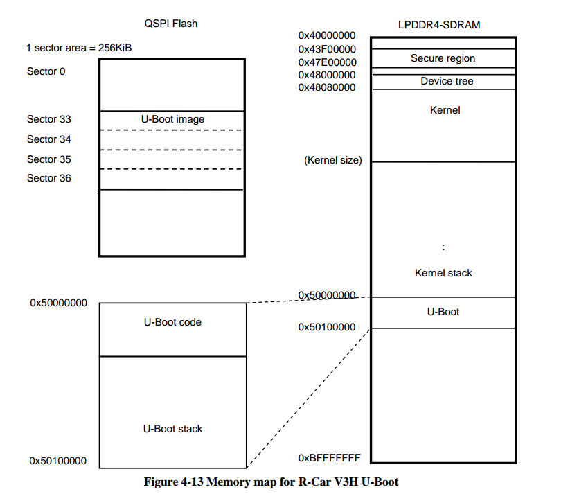
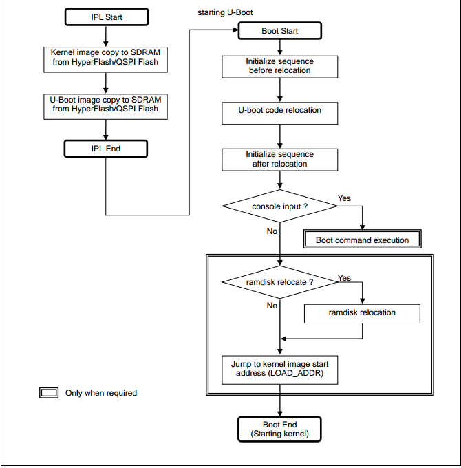
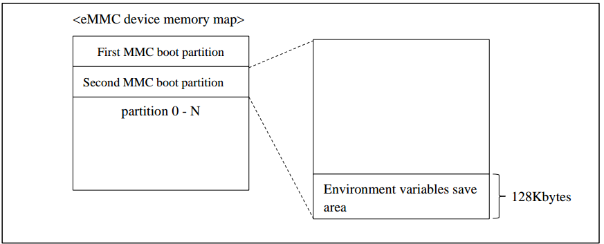
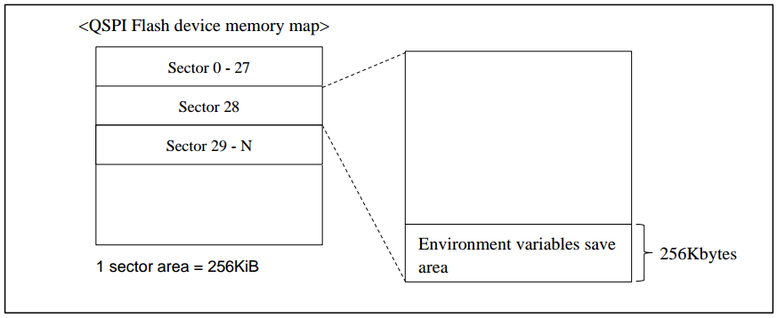
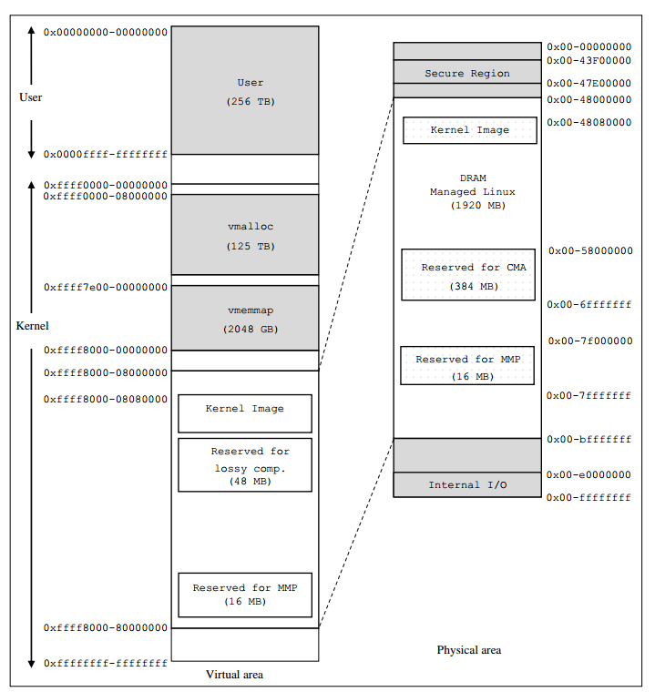

2.7. uboot-kernel地址空间
2.7.1. uboot地址空间
U-Boot image copy to LPDDR4-SDRAM from QSPI Flash by IPL
2.7.1.1. uboot在DDR中的地址空间

2.7.1.2. system boot sequence

2.7.1.3. emmc flash env


2.7.2. kernel地址空间
2.7.2.1. arm64 物理地址与虚拟地址空间
